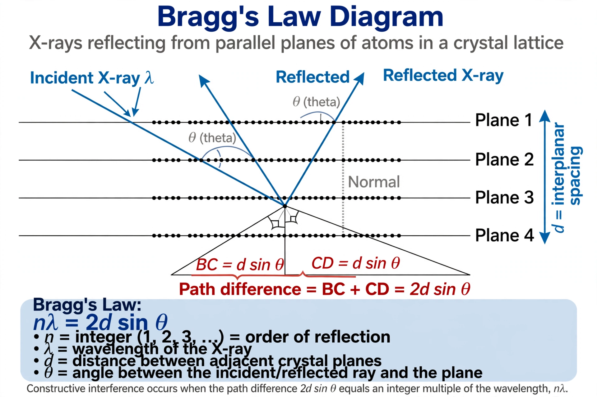

Bragg's law
From Wikipedia, the free encyclopedia

Bragg's law, in X-ray crystallography, relates the angles at which X-rays are strongly scattered by a crystal to the spacing between its atomic planes: nλ = 2d sinθ, where λ is the X-ray wavelength, d the plane spacing, θ the glancing angle and n an integer (the order of reflection). It was derived in 1912–13 by William Henry Bragg and his son William Lawrence Bragg, who shared the 1915 Nobel Prize in Physics — Lawrence, at 25, remaining the youngest physics laureate.
Derivation and idea
Treating crystal planes as partially reflecting mirrors, the younger Bragg saw that scattered waves reinforce when the path difference between reflections from successive planes equals a whole number of wavelengths. Max von Laue had shown in 1912 that crystals diffract X-rays; Bragg's law turned the phenomenon into a measuring instrument: from diffraction angles one reads interatomic distances.
Use
Bragg's law underpins X-ray diffraction analysis of crystal and molecular structure — from simple salts to Watson and Crick's DNA double helix (via Rosalind Franklin's Photo 51) — and neutron and electron diffraction, powder diffraction for materials science and pharmaceuticals, and the Bragg spectrometers that mapped X-ray spectra and hence atomic numbers under Henry Moseley.
Limits
The law treats diffraction kinematically; real intensities require structure-factor analysis, and imperfections, absorption and dynamical scattering complicate precise work. Its condition generalises in the Laue equations and Ewald sphere construction of reciprocal space.